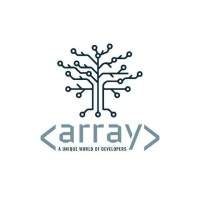
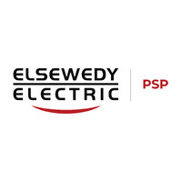

OrangeHRM Manual Testing
Comprehensive manual QA engagement on OrangeHRM — validating HR workflows, employee management, leave policies, payroll flows, and role-based access across the entire admin & employee portals.
.png)
A QA Software Engineer on a mission to ship software that simply works — through meticulous manual testing, automation, and a relentless eye for detail.
I'm a QA Software Engineer with hands-on experience testing LMS and e-commerce platforms, skilled in manual testing, API testing, and Selenium-based automation with Python. My mission is to be the invisible shield behind every release — catching defects before users ever notice them.
A development background in C#/.NET strengthens my collaboration with engineering teams and speeds up defect diagnosis. With a strong foundation in Computer Science and hands-on experience across web and API testing, I'm constantly expanding my toolkit in Selenium, PyTest, REST APIs, and modern QA workflows.
A carefully curated set of skills spanning the full QA lifecycle — from exploratory manual testing to scalable automation frameworks.
From Computer Science education and military service to hands-on QA internships across LMS and e-commerce platforms.

Own quality end-to-end on a live LMS platform: design and execute detailed manual and API test cases straight from business requirements, and validate functional accuracy and consistent UI/UX behavior across every release. Run structured regression, smoke, and exploratory testing each sprint to catch defects before they reach users, then log, prioritize, and track them to closure in partnership with developers and product owners. Active participant in daily stand-ups, sprint planning, review, and retrospectives, managing all QA work in ClickUp within an Agile team.
Intensive, industry-aligned testing track covering the full QA lifecycle: ISTQB Foundation Level fundamentals, manual and mobile testing, structured bug reporting, API testing, automation testing with Selenium/Java, and performance testing with JMeter — alongside SDLC, STLC, Agile testing practices, and professional soft skills for real-world QA teams.

Designed and executed test cases across registration, product browsing, cart, and checkout flows to validate functionality and business logic on a customer-facing e-commerce platform. Performed functional, UI/UX, and regression testing to ensure a smooth, consistent end-to-end shopping experience, and identified, documented, and tracked defects through resolution in close collaboration with developers to confirm requirement compliance.
Completed a hands-on Software Testing Fundamentals program covering manual testing, test case design, bug reporting, API testing, SDLC/STLC, and Agile testing — applied directly through a real testing project on the Sharelane website.
Successfully completed my mandatory military service while maintaining my commitment to continuous learning and preparing for a professional career in Software Quality Assurance.
Provided first-line IT support and resolved hardware, software, and network issues for end users. Maintained the Innovia Call Center System and documented incidents and service requests.
Performed quality inspections against defined standards, identified discrepancies, and maintained accurate, audit-ready documentation. Collaborated with cross-functional teams to improve workflow efficiency and uphold consistent quality standards — early groundwork for a detail-driven QA mindset.
Delivered software QA testing, data entry, and document formatting for clients using Excel, Word, and PowerPoint, maintaining a 5-star client satisfaction rating through accurate, high-quality, and on-time project delivery.
Graduated with a Good grade. Built a strong foundation in Software Engineering, Algorithms, Data Structures, Databases, and Web Technologies.
Graduation Project: AI-powered Veterinary Platform for disease diagnosis using Machine Learning. Grade: A.
Continuous learning has played a key role in building my technical and testing expertise through industry-focused training programs.
Intensive testing track covering ISTQB Foundation Level, Manual Testing, Bug Reporting, Mobile Testing, API Testing, Automation Testing (Selenium/Java), Performance Testing (JMeter), SDLC, STLC, and Agile Testing.
Completed comprehensive training in Manual Testing, Test Case Design, Bug Reporting, API Testing using Postman, SDLC/STLC, and Agile Testing methodologies.
Studied C#, Object-Oriented Programming, SQL Server, Entity Framework, ASP.NET Core Web API, MVC, and Design Patterns while building scalable backend applications.
Learned HTML5, CSS3, and JavaScript fundamentals, building responsive websites and gaining practical knowledge of modern web technologies.
Multilingual communication is a superpower in distributed engineering teams.
Native language
Native FluencyProfessional working proficiency
Working ProficiencyEnd-to-end quality services designed to ship reliable, polished software.
Exploratory & structured manual testing to find real-world issues users care about.
Reusable Selenium + PyTest frameworks that catch regressions before they reach production.
End-to-end REST API validation using Postman and Python — status codes, schemas, performance.
Crystal-clear, reproducible bug reports that developers actually love reading.
Systematic test case authoring using black-box, boundary, and equivalence techniques.
Confident releases powered by curated regression suites that evolve with your product.
Verifying features against requirements — ensuring the product does exactly what it should.
Process-level thinking to embed quality into every stage of the SDLC.
A handful of projects where I owned quality end-to-end — from test planning to automation.
Comprehensive manual QA engagement on OrangeHRM — validating HR workflows, employee management, leave policies, payroll flows, and role-based access across the entire admin & employee portals.
End-to-end test automation of the SauceDemo e-commerce app using Python, Selenium WebDriver, and PyTest. Built on the Page Object Model with explicit waits, robust XPath & CSS selector strategies.
Full QA coverage for the ShareLane e-commerce platform — including Registration, Login, Shopping Cart, and Checkout flows. Combined smoke, functional, and regression testing with detailed Jira bug reports.
Have a role, project, or just want to chat about QA? I'd love to hear from you.
Reach out through any of these channels — I usually respond within 24 hours.